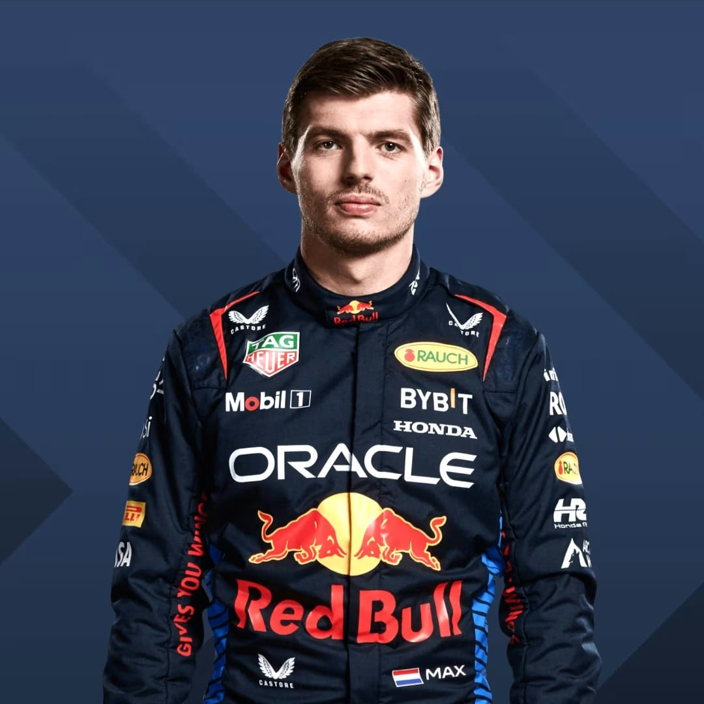
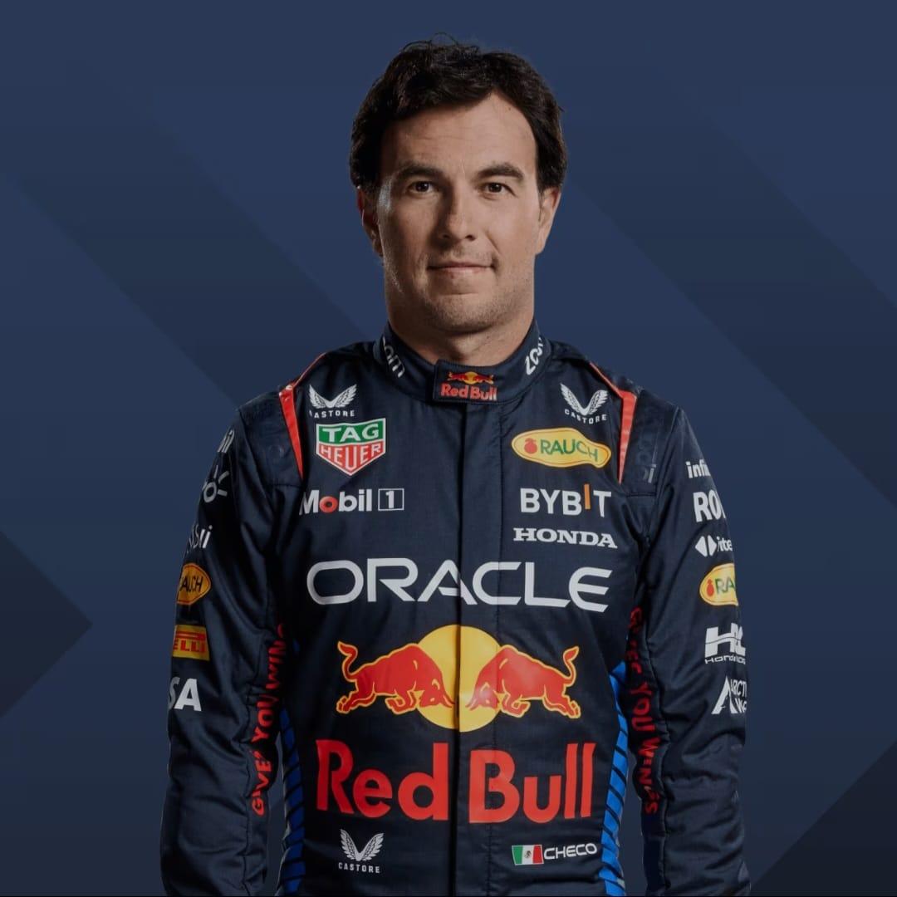

Equipo Red Bull Racing
El equipo de Red Bull en Formula Uno tiene aproximadamente mas de 1000 miembros. Este equipo incluye ingenieros, mecanicos, personal de operaciones, marketing, logistica y muchos mas roles necesarios par el funcionamiento correcto del equipo.
Pero a pesar de tener cientos de miembros, son muy pocos los que se ven a simple vista durante cada carrera. quienes desempeñan roles de gran importancia durante cada carrera como lo son los mecanicos y los pilotos
Una de las tareas mas conocidas de los mecanicos es la decambiar los neumaticos de los coches durante cada carrera. Para esta tarea se necesitan aproximadamente 20 personas asignadas a un rol en especifico. Estas personas tienen el objetivo no solo de cambiar los neumaticos de cada coche, si no tambien de hacerlo en el menos tiempo posible siendo el record de tan solo 1.88 segundos
Pilotos
Max Vertappen:Nacido en Hassel, Belgica en septiembre de 1997, compite bajo la bandera de Paises Bajos. Desde mu pequeño demostro tener talento para el automovilismo. Debuto en Formula Uno en 2015 con tan solo 17 años de edad, convirtiendose en el piloto mas joven en la historia de este deporte.
En 2016 ganó su primera carrera en el gran premio de España. Convirtiendose en el pilotomas joven en ganar un gran premio. A pesar de su gran talento fue asta 2021 que logro ganar su primer titulocomo campeon mundial de Formula Uno donde logro vencer a Lewis Hamilton el 7 veces ganador en la maxima categoria. Tambien gano los campeonatos de 2022 y 2023 siendo considerado el piloto mas dominante de su generacion.
Sergio Pérez:Tambien conocido como Checo Pérez Es un Piloto Mexicano nacido en Guadalajara, Jalisco en 1990. Conocido por ser uno de los pilotos mas consistentes y habilidosos de la parrillacon una trallectoria de mas de una decada en la Formula Uno.
Checo comenzo su carrera como piloto con el equipo Sauber en 2011 y rapidamente se gano una reputacion como un exelente gestor de neumaticos, lo que le permitio lograr muy buenos resultados con un coche que no era muy competitivo.
Luego se unio a McLaren y Racing Point. Apesar de su talento fue asta 2020cuando logro ganar su primer Gran Premio en Sakhir despues de pasar del puesto 20 asta llegar al primer lugar, gracias a su victora logro que Red Bull lo fichara par el año 2021 donde fue piesa clave para la victoria de Max Verstappen y obtuvo su apodo de Ministro de Defensa luego de retener a Lewis y hacerlo perder su ventaja de mas de 10 segundos sobre Max.
